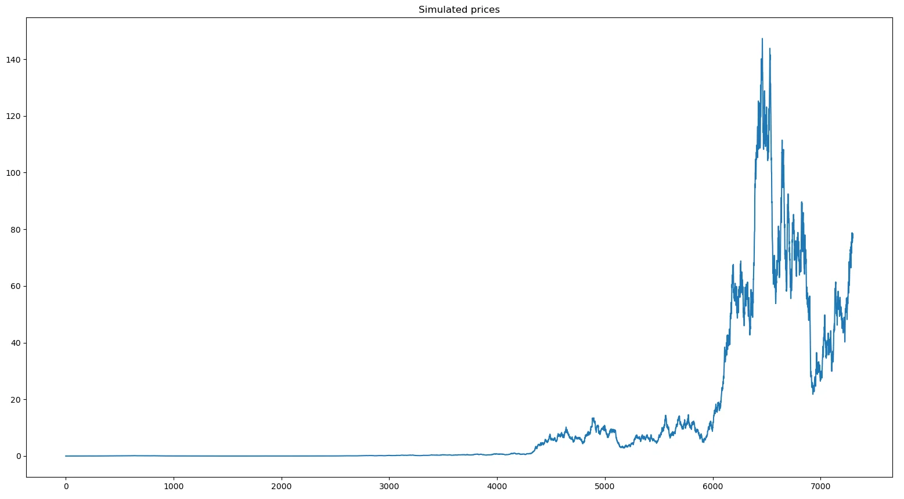
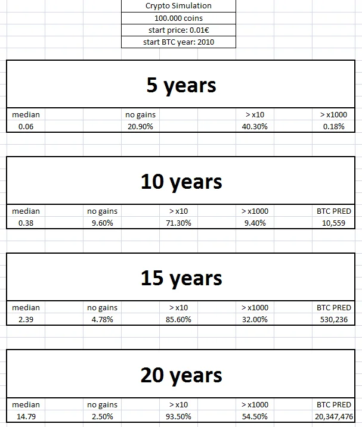

Προσομοίωση Bitcoin και άλλων crypto. Τι θα κάνουν στο μέλλον? Ένας τυχαίος περίπατος απαντά.

Σε αυτό το πόστ θα βρείς χρήσιμες πληροφορίες για το μέλλον του Bitcoin και άλλων κρυπτονομισμάτων. Εφαρμόσαμε το μοναδικό τρόπο "πρόβλεψης" μελλοντικών τιμών αξιών και παρουσιάζουμε τα αποτελέσματα.
Ο τυχαίος περίπατος (ή random walk) είναι γνωστός σε όσους έχουν την ατυχία, ή την τύχη, να ασχολούνται με την τεχνητή νοημοσύνη. Οι γνωρίζοντες ξέρουν ότι πολύ δύσκολα σήμερα (Φεβ-2022) οποιοδήποτε μοντέλο AI μπορεί να χτυπήσει το naive model. Και τι είναι το naive model? Η ''πρόβλεψη'' ενός αλγόριθμου ότι η επόμενη τιμή θα είναι ίδια με την προηγούμενη. Σε τόσο εμβρυακό στάδιο βρίσκεται η τεχνητή νοημοσύνη σχετικά με την πρόβλεψη χρηματιστηριακών τιμών.
Οπότε ο τυχαίος περίπατος, δηλ η τυχαία μεταβολή των τιμών, μπορεί υπό προϋποθέσεις να δώσει απαντήσεις για το μέλλον, αν συνδυαστεί με το παρελθόν. Ποιές είναι οι προϋποθέσεις? Πάμε να δούμε..
Προϋπόθεση 1η: Η τιμή του Bitcoin τον Ιούλιο του 2010 ήταν 1 λεπτό του δολαρίου. Δέκα χρόνια μετά ήταν περί τις 10.000 έχοντας όμως σαν υψηλότερο υψηλό τις 20.000 στο τέλος του 2017. Αγνοούμε το υψηλότερο των 20 χιλιάδων και επικεντρωνόμαστε στο κλείσιμο των 10 χιλιάδων.
Ακολούθως "παίζουμε" με τον συντελεστή μεταβολής r. Ο συντελεστής μεταβολής r είναι αυτός που μεταβάλλει καθημερινά τις τιμές μέσα σε ένα όριο. (Παραδείγματος χάριν, r = 5%, η ημερήσια διακύμανση δεν μπορεί να ξεπεράσει το +5% ή το -5%). Μεγαλύτερος συντελεστής συνεπάγεται και μεγαλύτερες μεταβολές, άρα και πιο ακραίες τιμές. Η πρώτη προϋπόθεση αφορά μόνο στο εξής: στην προσομοίωση καμία τιμή να μην ξεπερνά αυτή του Bitcoin. Κοινώς βάζουμε το Bitcoin σαν ταβάνι που δεν θα ξεπεραστεί ποτέ και απο κανένα κρύπτο.
Για την πρώτη προϋπόθεση έτρεξε 20 φορές, μια προσομοίωση 10.000 κρυπτονομισμάτων με r απο 1% εως 10% και αρχική τιμή όλων το 1 λεπτό. Τελικά το 4,1% έβγαλε τον πολυπόθητο μέσο όρο των 10.000 δολαρίων, 10 χρόνια μετά, για το νόμισμα με την μεγαλύτερη απόδοση (Bitcoin). Οπότε βγάλαμε το εύρος μεταβολής που οδήγησε το Bitcoin στην ξέφρενη πορεία της δεκαετίας 2010-2020.
Αφού βρέθηκε ακριβώς ο συντελεστής που καθόρισε την απόδοση του Bitcoin περνάμε στην 2η προϋπόθεση.
Προϋπόθεση 2η: Ο συντελεστής r που καθοδηγούσε το Bitcoin στα 10 χρόνια της ενηλικίωσης του, θα συνεχίσει να το κάνει και στο μέλλον.
Αυτή η προϋπόθεση σηκώνει πολύ κουβέντα γιατί μπορεί κάλλιστα να μην υπάρχει Bitcoin σε 10 χρόνια ή να έχει επιστρέψει στο 1 λεπτό ή να μην υπάρχει καν πλανήτης και άνθρωποι πάνω του σε θέση να το χρησιμοποιήσουν. Αλλά εδώ χρησιμοποιείται το "έστω ότι".
Για την 2η προϋπόθεση, πήρα τον χρυσό συντελεστή r (4,1 %) που θεωρητικά είναι σε ισχύ αφού το Bitcoin είναι πραγματικότητα αυτή την στιγμή που μιλάμε, και έτρεξα μια προσομοίωση 100.000 νομισμάτων με αρχική τιμή το ένα λεπτό, για 5 - 10 - 15 και 20 χρόνια στο μέλλον, με βάση το έτος 2010.
Τα αποτελέσματα φαίνονται στο πινακάκι της φωτογραφίας παρακάτω. Η επεξήγηση των στηλών είναι η εξής:
median: η διάμεσος. Η τελική τιμή των κρύπτο σορτάρεται σε αύξουσα σειρά και βλέπουμε την τιμή 50.000 που είναι η διάμεσος. Για παράδειγμα: στα 10 χρόνια η διάμεσος είναι 0,38 που σημαίνει οτι αν επιλέξεις τυχαία ένα κρύπτο σήμερα, η μέση πιθανότητα λέει οτι σε 10 χρόνια η αξία του θα είναι 38 φορές μεγαλύτερη.
no_gains: η πιθανότητα να μην έχεις καθόλου κέρδη, δηλ το κρύπτο να έχει παραμείνει στο 1 λεπτό ή να έχει μηδενίσει.
>x10 ή >x1000: η πιθανότητα να έχεις πολλαπλασιάσει το κεφάλαιο σου x10 ή x1000 στα αντίστοιχα χρόνια
BTC PRED: Η πρόβλεψη για το Bitcoin. Η πρόβλεψη για τα 15 ή 20 χρόνια που έδωσε το μοντέλο αφορά τα έτη 2025 και 2030 αντίστοιχα.
Μερικά απο τα στοιχεία της προσομοίωσης είναι πραγματικά εντυπωσιακά, όπως η πιθανότητα κατά 54,5% σε 20 χρόνια το αρχικό σου κεφάλαιο να έχει 1000-πλασιαστεί. Φυσικά εντυπωσιακότερο ακόμα είναι το γεγονός οτι ένα ψηφιακό νόμισμα χωρίς καμιά εσωτερική αξία, μπορεί να πάει απο το 1 λεπτό στα 10.000 δολάρια μέσα σε μόλις 10 χρόνια, οπότε δεν προκαλεί ιδιαίτερη εντύπωση, το 2025 να βρίσκεται στις 530.000 δολάρια.
Το άρθρο αυτό κλείνει με την 3η και βασικότερη προϋπόθεση όλων: Τα κρύπτο να παραμείνουν mainstream και να μην αντικατασταθούν απο κάτι άλλο. Ή να μην απαγορευτούν παγκοσμίως. Αν συμβεί κάτι απο τα παραπάνω, εξυπακούεται ότι η παραπάνω προσομοίωση είναι κενή περιεχομένου. Η μόδα και η δυναμική του Bitcoin είναι αυτή που το έφερε εδώ που είναι σήμερα. Αν κάτι απ' αυτά εκλείψει ή επιβληθούν περιοριστικοί νόμοι παγκοσμίως, το Bitcoin και τα κρύπτο γενικότερα θα ατονήσουν και κατόπιν θα εξαφανιστούν. Σήμερα δεν φαίνεται κάτι τετοιο αλλα τα δεδομένα αλλάζουν με ιλιγγιώδη ταχύτητα, οπότε τα μόνα βεβαια συνεχίζουν να είναι ο θάνατος και οι φόροι.
Το αρχείο xlsx σε όποιον ενδιαφέρεται να δει ολόκληρη την προσομοίωση, ελεύθερο για κατέβασμα εδώ.
Jan 2023 Update: 1 σχεδόν χρόνο μετά το τρέξιμο της παραπάνω προσομοίωσης έχουν γίνει πολλά στον πλανήτη γη, απο πολέμους και καταστροφές, μέχρι καθολική απαγόρευση των κρύπτο σε μεγάλες αγορές όπως η Κίνα και αναδιάταξη του παγκόσμιου status quo. Το Bitcoin είναι ακόμα εδώ, ζωντανό αλλά πληγωμένο. Ο συντελεστής r της δεκαετίας 2010-2020, φαίνεται να το έχει εγκαταλείψει για τα καλά και πολύ δύσκολα θα φτάσει τις τιμές της προσομοίωσης. Εδώ θα είμαστε τέλος του 2025 και '30, να δούμε τις τρέχουσες τότε τιμές, να αναπροσαρμόσουμε συντελεστές και να βγάλουμε τα συμπεράσματα μας.
Το παρόν άρθρο σε καμιά περίπτωση δεν αποτελεί επενδυτική συμβουλή οποιασδήποτε αγοράς ή πώλησης κρυπτονομισμάτων ή άλλων περιουσιακών στοιχείων. Είναι αποτέλεσμα επιστημονικής έρευνας και μελέτης. Για την αγορά οποιωνδήποτε περιουσιακών στοιχείων πρέπει να συμβουλεύεστε πιστοποιημένους γι' αυτό επαγγελματίες.